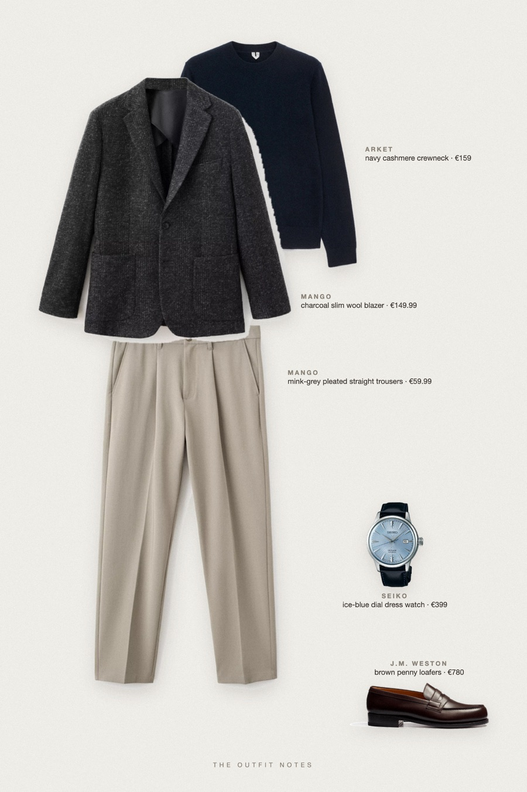
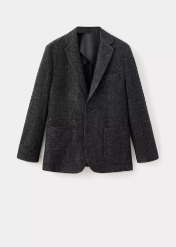
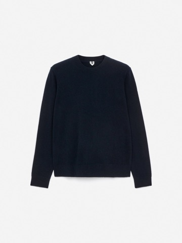
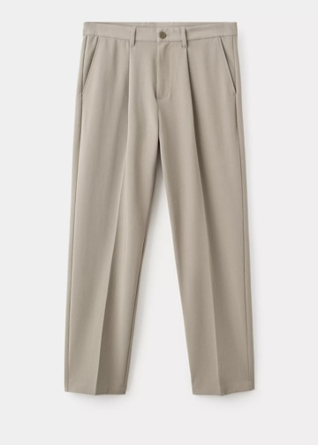
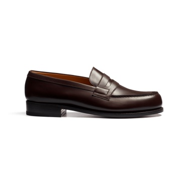
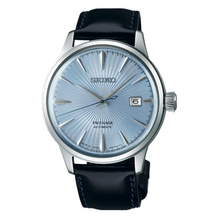

Tarmac Charcoal
boarding without a hurry

Succession style men's outfit built on stealth wealth basics: a charcoal wool blazer over a navy cashmere crewneck, fluid mink-grey pleated trousers with a sharp crease, brown leather moccasins and a navy-strap Seiko Presage. Quiet luxury men's look for travel days, board meetings and cold autumn evenings.
The pieces
This page contains affiliate links: if you buy through them, we may earn a commission at no extra cost to you. Disclosure.

Mango
Charcoal slim wool blazer
Shop
ARKET
Navy cashmere crewneck
Shop
Mango
Mink-grey pleated straight trousers
Shop
J.M. Weston
Brown penny loafers
Shop
Seiko
Ice-blue dial dress watch
Shop
Prices are indicative, taken when the look was published, and may have changed. Pictures of the outfit are AI-generated illustrations of real products; the product photos are the retailers' own.
Published 1 October 2026.